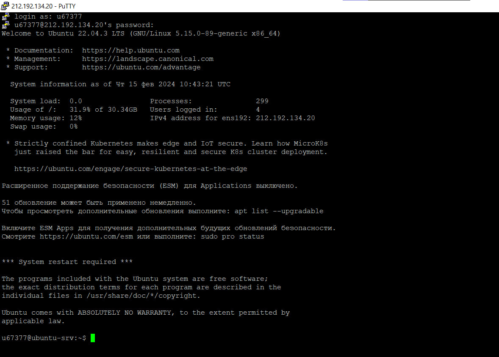
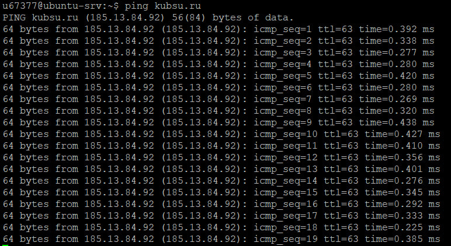
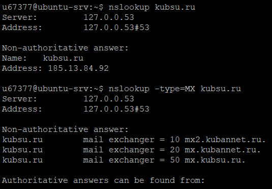
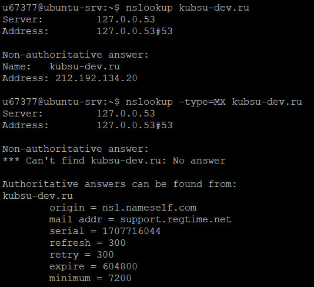
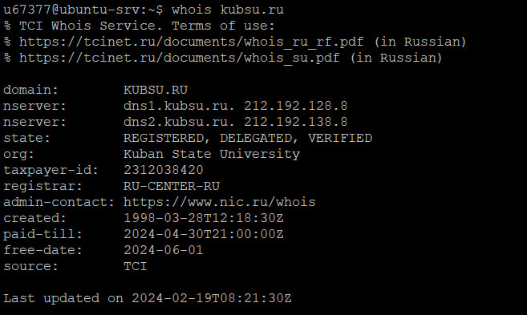
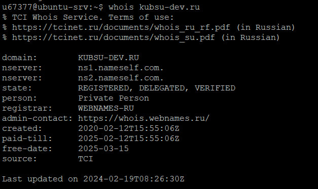
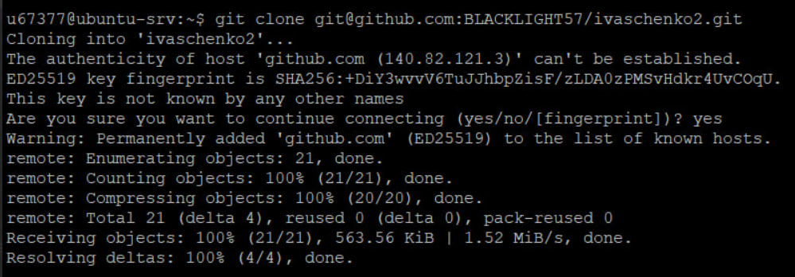
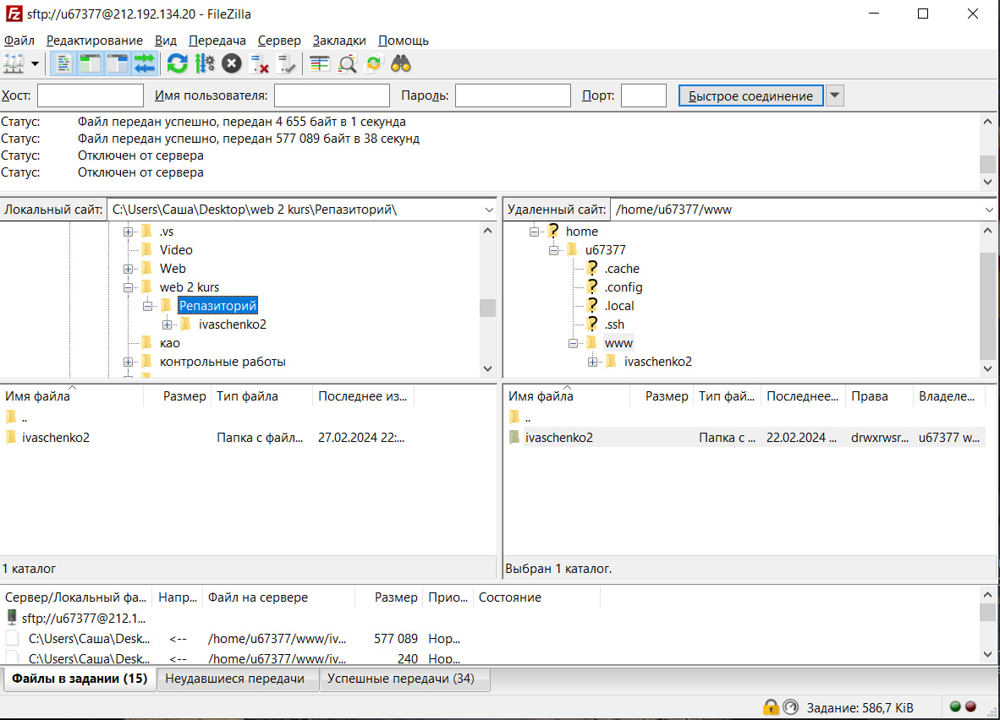

1.Подключение к учебному серверу kubsu-dev.ru по протоколу SSH с помощью клиента Putty по ip 212.192.134.20 и порту 22

2.Вызов команды "ping" на учебном сервере kubsu.ru

3.Вызов команды "nslookup" и "nslookup -type=MX" чтобы узнать A-записи и MX-записи домена kubsu.ru(верхний скрин) и kubsu-dev.ru(нижний скрин)
A-запись(address) — одна из ключевых ресурсных записей Интернета. Она нужна для связи домена с IP-адресом сервера. Пока не прописана А-запись, ваш сайт не будет работать.
Когда вы вводите название сайта в адресную строку браузера, именно по А-записи DNS определяет, с какого сервера нужно открывать ваш сайт.
MX-запись — запись, отвечающая за сервер, через который будет работать почта.
Записи MX критически важны для работы почты. Благодаря им отправляющая сторона «понимает»,
на какой сервер нужно отправлять почту для вашего домена.


4.Вызов команды "whois" чтобы узнать дату регистрации домена kubsu.ru(верхний скрин) и kubsu-dev.ru(нижний скрин)


5.Клонирование с помощью команды "git clone" репозитария со скриншотами и страницы в каталог 'www' по протоколу SSH

6.скриншот FileZila после копирования на локальный компьютер файлов задания из каталога 'www'
